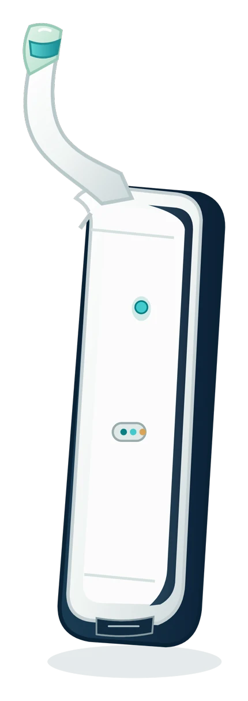

Current design priority
VisionStand
A digital design direction exploring guided handling, stable positioning, and a calm information experience. It is a visualization—not evidence of technical feasibility.
View all five directionsEarly-stage research concept
DentXpert explores how a future home-scanning experience might help people understand visual oral-health information—without pretending a concept can replace a dentist.

Not a working deviceA responsible vision
The project brings industrial design, accessible communication, privacy thinking, and research planning into one transparent concept. Every proposed feature remains a hypothesis to test.
Current design priority
A digital design direction exploring guided handling, stable positioning, and a calm information experience. It is a visualization—not evidence of technical feasibility.
View all five directionsConcept family
05
From a compact wand to a protected travel case, each direction explores a different use context.
Project principle
A future tool should support clearer conversations, never diagnose, reassure, or replace qualified care on its own.
Concept landscape
How could an approachable object make visual oral-health information easier to discuss while respecting safety, hygiene, accessibility, and privacy?
Guided positioning and a stable home base; the current focus for interface storytelling.
A lightweight handheld direction centered on reach and simplicity.
An ergonomics study for control, confidence, and handling.
A storage direction exploring readiness, protection, and hygiene.
A portable system concept for organized storage—not a product offer.
Concept film
The illustrative film is not public until narration permissions and caption accuracy are verified. No auto-play, incomplete captions, or ambiguous performance claims.
Read the project FAQContinue the journey
See what is proposed, what remains unknown, and what evidence would be needed before a concept could become anything more.
Follow the research journey →